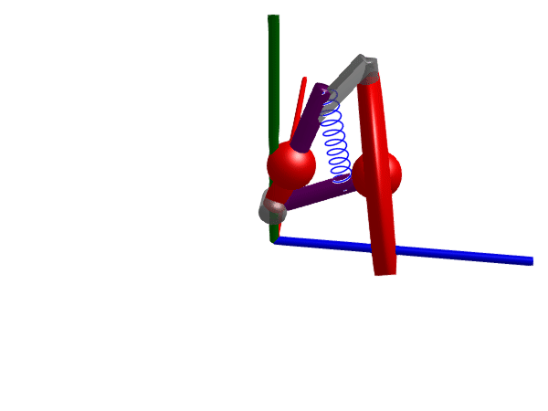

Prescribed movements
The movement of a frame can be prescribed using any of the components
The motion of joints Revolute and Prismatic can also be prescribed by using axisflange = true and attaching a ModelingToolkitStandardLibrary.Rotational.Position or ModelingToolkitStandardLibrary.TranslationalModelica.Position to the axis flange of the joint.
Prescribed motions can be useful to, e.g.,
- Use the 3D rendering capabilities to visualize the movement of a mechanism moving in a prescribed way without simulating the system.
- Simplify simulations by prescribing the movement of a part of the mechanism.
In the example below, we prescribe the motion of a suspension system using Pose. We load the Rotations package in order to get access to the constructor RotXYZ which allows us to specify a rotation matrix using Euler angles. The component prescribing the motion is
body_upright = Pose(; r = [0, 0.17 + 0.1sin(t), 0], R = RotXYZ(0, 0.5sin(t), 0))This makes the body_upright frame move in the vertical direction and rotate around the y-axis. Notice how the reference translation r and the reference orientation R are symbolic expressions that depend on time t. To make a frame follow recorded data, you may use DataInterpolations.jl to create interpolation objects that when accessed with t return the desired position and orientation.
using Multibody
using Multibody.Rotations # To specify orientations using Euler angles
using ModelingToolkit
using Plots
using OrdinaryDiffEq
using LinearAlgebra
using JuliaSimCompiler
using Test
t = Multibody.t
D = Differential(t)
n = [1, 0, 0]
AB = 146.5 / 1000
BC = 233.84 / 1000
CD = 228.60 / 1000
DA = 221.43 / 1000
BP = 129.03 / 1000
DE = 310.31 / 1000
t5 = 19.84 |> deg2rad
@mtkmodel QuarterCarSuspension begin
@structural_parameters begin
spring = true
(jc = [0.5, 0.5, 0.5, 0.7])#, [description = "Joint color"]
mirror = false
end
@parameters begin
cs = 4000, [description = "Damping constant [Ns/m]"]
ks = 44000, [description = "Spring constant [N/m]"]
rod_radius = 0.02
jr = 0.03, [description = "Radius of revolute joint"]
end
begin
dir = mirror ? -1 : 1
rRod1_ia = AB*normalize([0, -0.1, 0.2dir])
rRod2_ib = BC*normalize([0, 0.2, 0dir])
end
@components begin
r123 = JointRRR(n_a = n*dir, n_b = n*dir, rRod1_ia, rRod2_ib, rod_radius=0.018, rod_color=jc)
r2 = Revolute(; n=n*dir, radius=jr, color=jc)
b1 = FixedTranslation(radius = rod_radius, r = CD*normalize([0, -0.1, 0.3dir])) # CD
chassis = FixedTranslation(r = DA*normalize([0, 0.2, 0.2*sin(t5)*dir]), render=false)
chassis_frame = Frame()
if spring
springdamper = SpringDamperParallel(c = ks, d = cs, s_unstretched = 1.3*BC, radius=rod_radius, num_windings=10)
end
if spring
spring_mount_F = FixedTranslation(r = 0.7*CD*normalize([0, -0.1, 0.3dir]), render=false)
end
if spring
spring_mount_E = FixedTranslation(r = 1.3DA*normalize([0, 0.2, 0.2*sin(t5)*dir]), render=true)
end
end
begin
A = chassis.frame_b
D = chassis.frame_a
end
@equations begin
# Main loop
connect(A, r123.frame_a)
connect(r123.frame_b, b1.frame_b)
connect(b1.frame_a, r2.frame_b)
connect(r2.frame_a, D)
# Spring damper
if spring
connect(springdamper.frame_b, spring_mount_E.frame_b)
connect(b1.frame_a, spring_mount_F.frame_a)
connect(D, spring_mount_E.frame_a)
connect(springdamper.frame_a, spring_mount_F.frame_b)
end
connect(chassis_frame, chassis.frame_a)
end
end
@mtkmodel ExcitedWheelAssembly begin
@parameters begin
rod_radius = 0.02
end
@components begin
chassis_frame = Frame()
suspension = QuarterCarSuspension(; rod_radius)
wheel = SlippingWheel(
radius = 0.2,
m = 15,
I_axis = 0.06,
I_long = 0.12,
x0 = 0.0,
z0 = 0.0,
der_angles = [0, 0, 0],
iscut = true,
)
end
@equations begin
connect(wheel.frame_a, suspension.r123.frame_ib)
connect(chassis_frame, suspension.chassis_frame)
end
end
@mtkmodel SuspensionWithExcitationAndMass begin
@parameters begin
ms = 1500/4, [description = "Mass of the car [kg]"]
rod_radius = 0.02
end
@components begin
world = World()
mass = Body(m=ms, r_cm = 0.5DA*normalize([0, 0.2, 0.2*sin(t5)]))
excited_suspension = ExcitedWheelAssembly(; rod_radius)
prescribed_motion = Pose(; r = [0, 0.1 + 0.1sin(t), 0], R = RotXYZ(0, 0.5sin(t), 0))
end
@equations begin
connect(prescribed_motion.frame_b, excited_suspension.chassis_frame, mass.frame_a)
end
end
@named model = SuspensionWithExcitationAndMass()
model = complete(model)
ssys = structural_simplify(multibody(model))
display([unknowns(ssys) diag(ssys.mass_matrix)])
defs = [
model.excited_suspension.suspension.ks => 30*44000
model.excited_suspension.suspension.cs => 30*4000
model.excited_suspension.suspension.r2.phi => -0.6031*(1)
]
prob = ODEProblem(ssys, defs, (0, 2π))
sol = solve(prob, Rodas5P(autodiff=false), initializealg = BrownFullBasicInit())
@test SciMLBase.successful_retcode(sol)
Multibody.render(model, sol, show_axis=false, x=-0.8, y=0.7, z=0.1, lookat=[0,0.1,0.0], filename="prescribed_motion.gif") # Video┌ Warning: Rosenbrock methods on equations without differential states do not bound the error on interpolations.
└ @ OrdinaryDiffEqCore ~/.julia/packages/OrdinaryDiffEqCore/55UVY/src/solve.jl:108
Even though we formulated an ODEProblem and called solve, we do not actually perform any simulation here! If we look at the mass matrix of the system
ssys.mass_matrix6×6 LinearAlgebra.Diagonal{Int64, Vector{Int64}}:
0 ⋅ ⋅ ⋅ ⋅ ⋅
⋅ 0 ⋅ ⋅ ⋅ ⋅
⋅ ⋅ 0 ⋅ ⋅ ⋅
⋅ ⋅ ⋅ 0 ⋅ ⋅
⋅ ⋅ ⋅ ⋅ 0 ⋅
⋅ ⋅ ⋅ ⋅ ⋅ 0we see that it is all zeros. This means that there are no differential equations at all in the system, only algebraic equations. The solver will thus only solve for the algebraic variables using a nonlinear root finder. In general, prescribing the value of some state variables removes the need for the solver to solve for them, which can be useful for simplifying simulations. Using the "simulation" above, we can use the solution object to, e.g., find the compression of the spring and the forces acting on the ground over time.
plot(sol, idxs=[model.excited_suspension.suspension.springdamper.s, -model.excited_suspension.suspension.springdamper.f, model.excited_suspension.wheel.wheeljoint.f_n], labels=["Spring length [m]" "Spring force [N] " "Normal force [N]"], layout=(2,1), sp=[1 2 2])Here, we see that the total spring force and the normal force acting on the ground are not equal, this is due to the spring not applying force only in the vertical direction. We can also compute the slip velocity, the velocity with which the contact between the wheel and the ground is sliding along the ground due to the prescribed motion.
wj = model.excited_suspension.wheel.wheeljoint
plot(sol, idxs=[wj.v_slip, wj.v_slip_long, wj.v_slip_lat], labels=["Slip velocity magnitude" "Longitudinal slip velocity" "Lateral slip velocity"], ylabel="Velocity [m/s]")